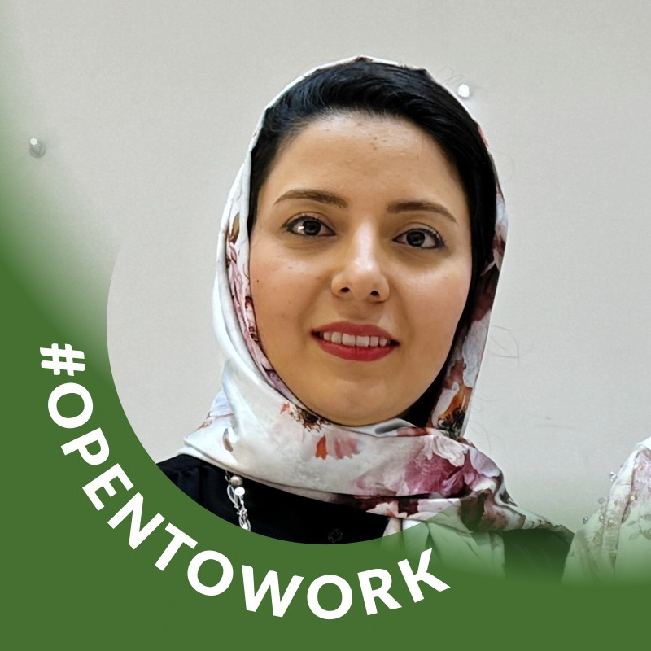

Nutrition Science Expert
Advancing research in metabolomics and public health through innovative approaches to nutrition science.
About
I hold a master’s degree in nutrition science from Karolinska Institutet and have a broad range of experiences in nutrition science. My expertise spans metabolomics, sports nutrition, and public health, equipping me with a comprehensive skill set to excel in the field.
Education
- Karolinska Institutet, Sweden - MSc in Nutrition Science, 2024
- University of Tabriz, Iran - MA in Exercise Physiology & Sports Nutrition, 2021
- Tabriz University of Medical Science, Iran - BSc in Nutrition Science, 2014
Experience
- Research Assistant, Integrative Metabolomics, IMM - 09/2023 – 06/2024
- Event/Workshop Coordinator, Tabriz University - 2017 – 2022
- Clinical Dietitian, Shahid Madani Cardiac Hospital - 2017 – 2019
Skills
- Metabolomics
- Nutrition Assessment
- LC-MS
- SPSS & R
- Biochemistry
Gallery

Research Papers

Poster Title 1
Presented at the National Nutrition Congress, focusing on the impact of dietary habits on cardiovascular health.

Poster Title 2
Research on the relationship between oxidative stress and physical performance presented at the Sports Science Conference.

Poster Title 3
A study of metabolomics and aging, featured in the International Congress on Nutrition.